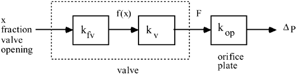

| 1: | Consider the control valve diagram presented in Figure M15-5 and Equations (M15.16)–(M15.18). Find the gain between the fraction of valve opening, x, and the output of the orifice plate, DP, as a function of flow rate for each of the valves shown in Figure M15-5. Assume that the sum of the pressure drop across the valve and the orifice plate is constant. Assume that the constant pressure drop is 30 psig, and that at maximum flow, three quarters of the pressure drop is across the valve and one quarter is across the orifice plate. The gain calculation is shown conceptually below.  |